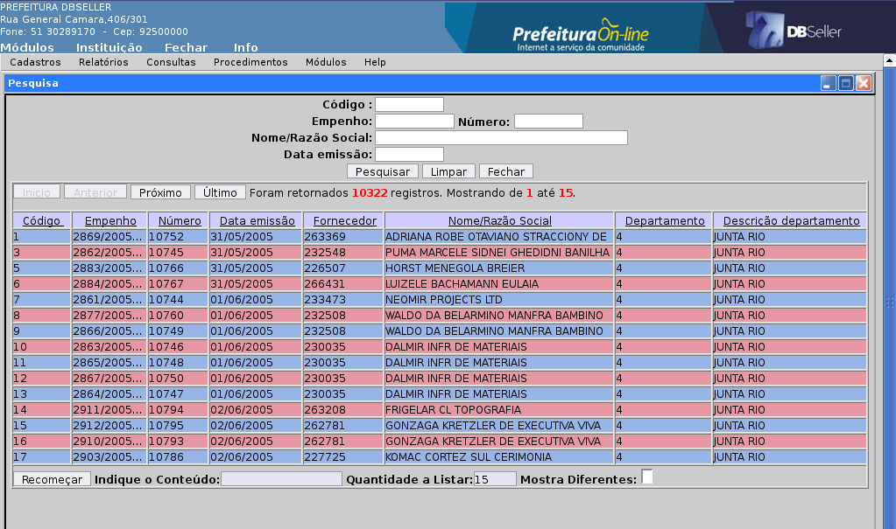
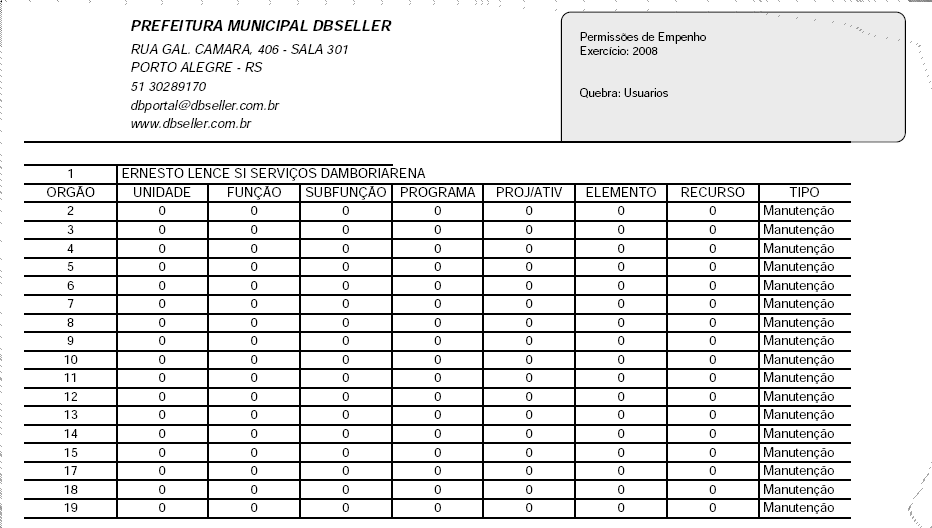
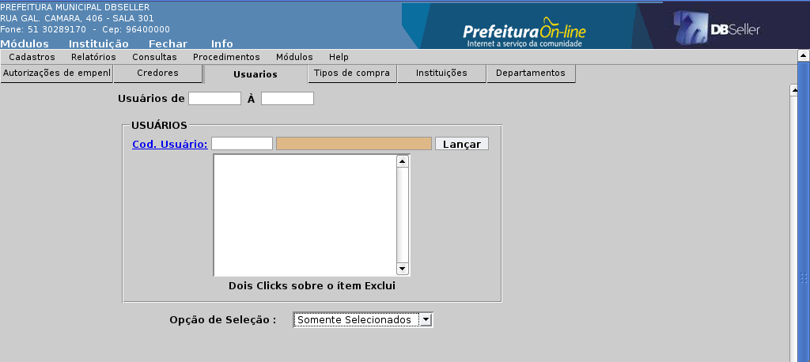
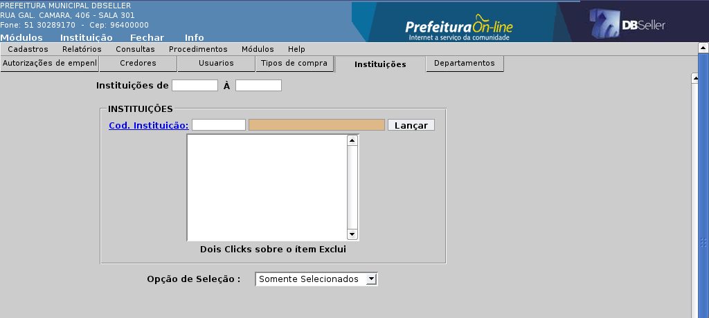

Figura 54
Índice
Inclusão 3
Exclusão 4
Inclusão 4
Exclusão 5
Cadastro de Tipo de Restos a Pagar 5
Inclusão 5
Exclusão 6
Tipo de Evento (Prestação de Contas) 6
Inclusão 6
Exclusão 8
Inclusão 8
Exclusão 9
Inclusão 9
Exclusão 9
Relatórios 10
Documentos 10
Reemissão de Relatórios de Slip 13
Emite Autorização de Empenho 16
Empenhos 20
Relatório de Ordem de Pagamento 33
Relatórios de Ordem de Compra 37
Consultas 40
Consulta Autorização de Empenho 41
Inclusão 44
Alteração 47
MÓDULO EMPENHO
O histórico serve para facilitar o entendimento da finalidade do empenho. Na inclusão do empenho existe um campo onde é possível escolhe-lo, e após a emissão do empenho é possível fazer consultas filtrando pelo histórico.
No seu cadastro é gerado um seqüencial, para a inclusão do histórico basta , acessar o cadastro , e escolher a opção Inclusão, colocar a a finalidade do histórico e Incluir.
Figura
1
O histórico pode ser facilmente alterado apenas acessando a opções de alteração, os histórico ja cadastrados são disponibilizados em uma tela de consulta onde pode ser escolhido e alterado.
Figura
2
O histórico pode ser facilmente excluído apenas acessando a opções de exclusão, os histórico ja cadastrados são disponibilizados em uma tela de consulta onde pode ser escolhido e excluídos.
Figura
3
Para
o cadastro de Tipo de empenho Basta preencher o campo Tipo de
Empenho, descrever o tipo do empenho que esta sendo incluído
no campo Descrição, logo
clicar em Incluir.
Figura 4
O Tipo de Empenho pode ser facilmente alterado apenas acessando a opções de alteração, os ja cadastrados são disponibilizados em uma tela de consulta onde pode ser escolhido e alterado.
Figura
5
O Tipo de Empenho pode ser facilmente excluído apenas acessando a opções de exclusão, os ja cadastrados são disponibilizados em uma tela de consulta onde pode ser escolhido e excluídos.
Figura
6
Esta opção serve para o cadastro de tipos de Restos a Pagar, os tipos de Restos a Pagar são controlados em relatórios , transações e lançamentos contábeis.
O cadastro dos Tipos , e simples, basta acessar a inclusão do seu cadastro, logo , preencher os campos.
Código do Tipo: este deve ser incluído sempre com a numeração de um tipo de Restos a Pagar não existente;
Descrição do Tipo: Informação referente ao grupo de Restos a Pagar que este tipo vai representar;
Elemento: Este campo deve ser preenchido com o elemento dos restos a Pagar que serão representados por este tipo de restos a pagar.
Após o preenchimento de todos os campos basta clicar em Incluir.
Figura
7
A alteração deste cadastro disponibiliza todos os Tipos de Restos a Pagar cadastrados, disponibilizando todos na primeira tela da Alteração.
Figura
8:
Após escolher o desejado pode manipular qualquer campo incluído anteriormente, basta editar o desejado e Alterar.
Figura
9
A exclusão também disponibiliza todos os tipos de Restos a Pagar cadastrados, e para exclui-los, basta escolher e clicar em Excluir.
Cadastro de Prestação de contas , serve para distinguir o tipo de evento que será utilizando ao empenhar.
Os campos da prestação de contas, são os seguintes:
Evento: Este campo é um seqüencial, e preenchido automaticamente pelo sistema;
Descrição do Evento : A finalidade do para qual este vai ser usado;
Obriga: Campo com três opções:
Não presta : Este campo selecionado na inclusão da prestação de contas, o empenho não é obrigado passar pela procedimento de prestação de contas;
Obriga Valores: Deverá, na Prestação de contas, prestar tanto os documentos, como valores;
Obriga Contas: Escolhida esta opção na inclusão do Evento, o empenho é obrigado a passar pelo procedimento de Prestação de Contas.
Figura
10:
Para incluir basta preencher todos os campos e clicar em Incluir.
O botão Pesquisar, serve para verificar se o evento a ser cadastrado , já existe.
A alteração deste cadastro, lista os eventos já cadastrados.
Figura
11:
E logo após a escolha do evento sofrera a alteração , o sistema disponibiliza o evento com todos os campos liberados para alteração.
Figura
12:
A exclusão disponibiliza todos os tipos de Prestação de Contas cadastrados, e para exclui-los, basta escolher e clicar em Excluir.
Figura
13:
Figura 14:
Figura 15:
Figura 16:
Figura 17:
Figura 18:
Os relatórios emitidos nesta rotina , são exatamente os documentos emitidos após a inclusão de cada procedimento, como por exemplo: Autorização de Empenho, Empenho, Ordem de Pagamento.
Dispõem de dois campos para a filtragem do documento a ser emitido:
Empenho: Onde pode ser colocado o código do empenho, que é a numeração do exercício;
Número : Campo que deve ser preenchido com o numero do empenho, este que é um seqüencial, que não zera no fim de cada exercício.
Disponibiliza também campos com o período , para que seja possível emitir os documentos de empenho de um determinado período.
Figura
19:
Figura
20:
Esta opção reemite o documento de anulação de um empenho. Dispõe de três campos para a filtragem do documento a ser emitido:
Empenho: Onde pode ser colocado o código do empenho, que é a numeração do exercício;
Número : Campo que deve ser preenchido com o numero do empenho, este que é um seqüencial, que não zera no fim de cada exercício;
Código da anulação : Código este que é gerado após a anulação do empenho.
Para emitir o documento, basta um clique no botão “Consultar”.
Figura
21:
Figura 22:
Esta opção serve para emitir uma ou mais ordens de pagamento, que poderão ser selecionadas da seguinte forma:
por número do empenho;
por intervalo de ordens escolhendo um número inicial e um final dentro de uma ordem crescente de números;
por período, incluindo data inicial e data final.
Para que o documento ou documentos escolhidos sejam impressos deve clicar no botão consultar.
Figura
23:
Esta opção reemite os documentos de slip, bastando digitar o número no campo “Código do Slip”, caso o usuário não souber o numero do slip desejado, pode clicar na âncora do campo, e o sistema trará na tela listagem com todos os slips gerados , possibilitando um clique sobre a linha em que se encontra o slip desejado, que será marcado para reimpressão retornando para tela anterior, bastando clique no botão “Gerar Relatório” para impressão do documento.
Figura
24:
Figura
25:
Esta opção reemite ordem de compra, que pode ser uma por vez ou um grupo de ordens dentro de uma sequência escolhida. Pode ser digitado o numero da ordem diretamente no campo próprio, ou clicar na âncora postada ao lado do campo e o sistema mostrará tela com as ordens disponíveis para impressão, um clique sobre a linha com a ordem desejada e o sistema remeterá para a tela anterior bastando então clicar no botão processar.
Figura
26:

Figura
27:
Figura
28:
Esta opção permite a reemissão de autorização de empenho, dispondo dos seguintes campos para filtrar a autorização a ser emitida:
Autorizações de: número inicial e número final;
Período: Data Inicial a Data Final;
Informações adicionais: Mostrar Autorização de Processo de Compras ou Mostrar Somente Autorização.
Figura
29:
Esta opção permite a emissão de documento padrão e auxiliar para registrar a anulação de execução de receita ou de despesa, em verdade serve como um tipo de recibo, em que , no caso de um anular de receita que terá que ser devolvida ao contribuinte, conterá o recebimento formalizado com a assinatura de quem recebeu o valor devolvido. Importante salientar que, o simples fato de gerar o documento não executa nem um tipo de registro no sistema, sendo assim a emissão do mesmo não isenta de se proceder a utilização dos respectivos procedimentos de anulação de empenho e dispõe dos seguintes campos para preenchimento:
Numcgm: escolher o contribuinte que irá receber a devolução;
Valor do Anular: digitar o valor do lançamento;
Histórico: Digitar histórico ou observação necessária.
Para emitir o documento após inserir os dados clicar no botão “Pesquisa”.
Figura
30:
Figura
31:
Esta opção permite a emissão de todos os históricos padrões cadastrados para uso no empenhamento da despesa.
Figura
32:
Figura 33:
Relatório de Tipos de Empenho Cadastrado, classificação conforme enquadramento da Lei 4.320/64.
Figura
34:
Esta opção emite o relatório de permissões de empenho, pode ser emitido por exercício e demonstra agrupando por usuários. Para emitir basta clicar no botão gerar relatório.

Figura
35:
Este é um relatório com várias opções de filtro para emissão , sendo as possibilidades as seguintes:
ABA PRINCIPAL:
SELEÇÃO DA INSTITUIÇÃO: Marcar Cxbox;
DATA DE EMISSÃO: Período Inicial e Período Final;
PROCESSAR: Posição Atual ou Período de Lançamentos;
FILTRO DE LISTAGEM: Escolha pela movimentação dos empenhos;
AGRUPAR POR: Fornecedor, Órgão, Recurso ou Desdobramento;
TRAZER VALOR EM ORDEM: Empenhado, Liquidado ou Pago;
MOSTRAR: Recurso ou Tipo de Compra;
MOSTRAR EMPENHOS: Sim ou Não;
MARCAR EM CXBOX
( ) Mostrar Totalizações
( ) Mostrar ìtens
( ) Mostrar Resumo
( ) Mostrar Lançamentos
Figura
36:
ABA CREDOR
OPÇÕES: Com ou Sem Credor Selecionado;
NUMCGM:Selecionar o Credor e clicar no botão Lançar;
Figura
37:
ABA EVENTO/HISTÓRICO
HISTÓRICO: Selecionar o histórico digitando o número ou clicando na âncora, clicar no histórico desejado, após clicar no botão lançar para que a seleção tenha efeito;
EVENTO: Selecionar o evento digitando o número ou clicando na âncora, clicar no evento desejado, após clicar no botão lançar para que a seleção tenha efeito;
Figura
38:
ABA TIPO DE COMPRA
OPÇÕES: Com ou sem os tipos de compra selecionados;
TIPO DE COMPRA: Digitar o tipo de compra ou clicar na âncora e escolher o tipo desejado, após clicar no botão lançar para que a opção tenha efeito.
Figura
39:
ABA MATERIAL/SERVIÇO
OPÇÕES: Com ou sem Materais/Serviços ou subgrupos selecionados;
CÓDIGO DO MATERIAL: Digitar o código do material ou clicar na âncora e escolher o tipo desejado, após clicar no botão lançar para que a opção tenha efeito.
CÓDIGO DO SUBGRUPO: Digitar o código do Subgrupo ou clicar na âncora e escolher o tipo desejado, após clicar no botão lançar para que a opção tenha efeito.
Figura
40:
ABA CARACTERÍSTICA PECULIAR
OPÇÕES: Com ou sem as características selecionadas ;
CARACTERÍSTICA PECULIAR: Digitar o número da característica peculiar ou clicar na âncora e escolher o tipo desejado, após clicar no botão lançar para que a opção tenha efeito.
.
Figura
41:
Esta opção permite a emissão de relatório de empenhos com a possibilidade utilização dos seguintes filtros:
ABA CREDOR
OPÇÃO: Com ou sem credores selecionados;
NUMCGM: Digitar o código do CGM desejado e clicar no botão lançar para que a escolha tenha efeito;
PERÍODO: Data Inicial e Data Final;
ORDEM: empenho, data empenho, data lançamento, tipo, valor, credor;
MOSTRAR HISTÓRICOS: sim ou não;
MOSTRAR ÍTENS: sim ou não;
LISTAR RP: sim ou não;
MARCAR: “Empenhado”, “Liquidado” ou “Pago”.
Figura
42:
Este relatório pode ser emitido utilizando os seguintes filtros:
ABA CREDOR
SELEÇÃO DA(S) INSTITUIÇÃO(ÕES);
OPÇÕES: Com ou sem credores selecionados;
CREDORES, NUMCGM: Pode ser digitado o número do credor diretamente no campo ou localizar na âncora NUMCGM, para que o fornecedor encontrado seja utilizado na emissão do relatório deve ser clicado no botão lançar, e dois clicks sobre o fornecedor escolhido retiram ele do parâmetro:
PERÍODO: Data Inicial e Data Final;
TIPO DE COMPRA: Todos, Concorrência, Concurso, etc;
ORDEM: Empenho, Data de Empenho, Data de Lançamento, etc;
MOSTRAR HISTÓRICOS: Sim ou Não;
MOSTRAR ÍTENS: Sim ou Não;
LISTAR RP: Sim ou Não
MARCAR : “Empenho”, “Estorno de Empenho”, “Liquidação”, “Estorno de Liquidação”, “Pagamento”, “Estorno de Pagamento”, “Imprime Filtro”.
Figura
43:
Este relatório possibilita a demonstração da relação de Restos a Pagar com os seguintes filtros disponíveis:
SELEÇÃO DA(S) INSTITUIÇÃO(ÕES);
POSIÇÃO ATÉ: Data limite para o relatório;
ACUMULAR POR: Empenho em ordem de:
Número;
Data de Emissão;
Credor;
Tipo Resto:
Unidade;
Sub-função;
Recurso;
Tipo de Resto;
Recurso;
Recurso/Elemento
Órgão;
RESTOS A PAGAR: Geral, com movimento até a data, com saldo a pagar;
RECURSO: Um recurso ou todos;
OPÇÃO: Todos, Liquidados, Não Liquidados, Anulados;
EXERCÍCIO: Todos ou exercício por exercício;
Para imprimir clicar no botão relatório;
Figura
44
Esta opção permite a emissão de relatório de empenhos pagos com as seguintes possibilidades de filtros:
NUMCGM: Digitar o código do CGM ou clicar na âncora e pesquisar o código;
CÓDIGO DA CONTA: Digitar o código reduzido da conta ou clicar na âncora e pesquisar o código;
DATA: Período Inicial e Período Final;
ORDEM: Empenho ou autenticação;
QUEBRAR POR CONTA: Sim ou Não;
LISTA EMPENHOS: Geral, Exercício ou Restos a Pagar;
Para emitir o relatório clicar no botão “Emitir Relatório”
Figura
45
ABA AUTORIZAÇÃO
Ao acessarmos este relatório, a primeira aba que acessamos é a Autorização de Empenhos, na qual teremos à disposição os seguintes filtros:
AUTORIZAÇÕES DE : Número Inicial À Número Final;
DATA DE EMISSÃO : Inicial e Final;
AUTORIZAÇÃO: Digitar o número ou clicar na âncora e localizar o número da autorização pretendida, para que tenha efeito a solicitação deve clicar no botão Lançar, dois clicks excluem a autorização;
OPÇÃO DE SELEÇÃO: Somente os selecionados ou menos os selecionados;
ORDEM DE SELEÇÃO: Autorização de empenho, data de emissão, Nome do Credor, Nome do Usuário, Tipo de Compra ou Instituição;
PROCESSAR: Não anuladas, Anuladas, Todas;
TIPO: Todas, Empenhadas ou Não Empenhadas;
LISTAR itens: Sim ou Não
Figura
46
ABA CREDORES
CGM DE: Número à Número, clicar no botão Lançar para a opção ter efeito;
OPÇÃO DE SELEÇÃO: Somente Selecionados ou Menos os Selecionados;
Figura
47
ABA USUÁRIOS:
USUÁRIOS de : Código Inicial à Código Final de Usuário,
CÓD USUÁRIO: digitar um código ou procurar clicando na âncora e após clicar na linha do código escolhido, a tela retornará à anterior e deve-se clicar no botão Lançar para que a escolha tenha efeito.
OPÇÃO DE SELEÇÃO: Somente os selecionados ou menos os selecionados.

Figura
48
ABA TIPOS DE COMPRA
TIPOS DE COMPRA:Selecionar código inicial e final de tipo de compra;
CÓDIGO DE TIPO DE COMPRA: Incluir um código ou pesquisar clicando na âncora, após encontrar o código clicar na linha do respectivo e após clicar no botão Lançar para que a escolha tenha efeito;
OPÇÃO DE SELEÇÃO: Somente os selecionados ou menos os selecionados.
Figura
49
ABA INSTITUIÇÕES
INSTITUIÇÕES: Incluir o código da Instituição, inicial e final;
CÓD. INSTITUIÇÃO: Incluir o código ou pesquisar clicando na âncora, após encontrado clicar na linha do código escolhido e na tela seguinte clicar no botão Lançar para que a escolha tenha efeito;
OPÇÃO DE SELEÇÃO: Somente os selecionados ou menos os selecionados.

Figura
50
ABA DEPARTAMENTOS
DEPARTAMENTOS DE: Incluir o código inicial e o final ;
DEPARTAMENTOS: Incluir o código desejado ou pesquisar clicando na âncora , após escolhido clicar na linha do código desejado e, em seguida clicar no botão Lançar para que a escolha tenha efeito.
Figura
51
Após a escolha de todos os filtros clicar no botão Relatório para emissão do mesmo.
Esta opção gera a emissão do relatório de cheques emitidos, a seguinte possibilidade de filtros:
OPÇÕES: Com ou sem as contas selecionadas;
CONTAS-TIPO: Incluir o reduzido da conta ou clicar na âncora e pesquisar a conta desejada, após encontrar clicar na linha da respectiva conta e ao retornar à tela anterior, clicar no botão Lançar para que a escolha tenha tenha efeito;
DATA: Incluir data inicial e final;
CONSIDERAR: Todos, somente autenticados, somente não autenticados;
Para gerar o relatório clicar no botão relatório.
Figura
52
Possibilita a emissão de relatório de cheques cancelados, bastando incluir a data inicial e final do período desejado para o relatório.
Figura
53
Esta opção possibilita a emissão de relatório das Ordens de Pagamento emitidas, de acordo com os filtros marcados.
Possibilidade de filtros:
De: Data Inicial até Data Final:
A partir da Ordem: Número Inicial até Número Final de Ordem:
A partir de Empenho: Número empenho inicial até Número empenho Final;
Para emissão do relatório clicar no botão Emitir Relatório.
Figura
54
Figura
55
Esta opção permite a emissão de relatório de Notas de Liquidação incluídas no sistema, com as seguintes possibilidades de filtros:
Data de Emissão de: Data Inicial até Data Final;
Data do recebimento de: Data Inicial até Data Final;
A partir de Empenho: Número empenho inicial até Número empenho Final;
NUMCGM: Digitar o número do CGM do fornecedor ou clicar no link e efetuar a busca do credor desejado, após encontrar clicar na linha do mesmo e, ao retornar à tela anterior clicar no botão lançar para que o filtro tenha efeito;
Opção de Seleção: Somente os selecionados ou menos os selecionados.
Clicar no botão “Emitir Relatório” .
Figura
56
Figura
57
Esta é uma opção que emite relatório de pagamento por notas com as seguintes possibilidades de filtros:
NUMCGM: Digitar o número do CGM do fornecedor ou clicar no link e efetuar a busca do credor desejado, após encontrar clicar na linha do mesmo e, ao retornar à tela anterior clicar no botão lançar para que o filtro tenha efeito;
Emissão de Empenho: Data Inicial até Data Final;
Limite de Registros:
Clicar no botão Emitir Relatório para impressão.
Figura
58
Figura
59
Esta opção permite a emissão do relatório de Ordens de Compra com as seguintes possibilidades de filtros:
ABA DEPARTAMENTOS
ORDEM DE COMPRA INICIAL : FINAL;
OPÇÕES: Com ou sem os Departamentos selecionados;
DEPART: Digitar o número do Departamento ou clicar na âncora e pesquisar o Departamento desejado, encontrando clicar sobre a linha correspondente que o sistema retornará à tela anterior, então clicar no botão Lançar pra que a escolha tenha efeito;
PERIODO: Data Inicial a Data Final;
ORDEM: Ordem de compra, Departamento, CGM ou Data;
OPÇÃO DE IMPRESSÃO: Não anuladas, Todas, Anuladas;
TOTALIZAÇÃO POR: Departamentos, Fornecedor ou ìtens;
Figura
60
ABA FORNECEDOR
OPÇÕES : Com os fornecedores ou sem os fornecedores selecionados;
NUMCGM: Digitar o número do CGM do fornecedor ou clicar no link e efetuar a busca do credor desejado, após encontrar clicar na linha do mesmo e, ao retornar à tela anterior clicar no botão lançar para que o filtro tenha efeito;
Figura
61
ABA ITENS
OPÇÕES: Com os itens selecionados ou sem os itens selecionados;
CÓDIGO DO MATERIAL: Digitar o código do Material ou clicar na âncora e pesquisar o código desejado, após encontrar clicar na linha do mesmo, e o sistema retornará à tela anterior , clicar no botão Lançar para que a escolha tenha o efeito.
Após a escolha de todos os filtros retornar à aba Departamentos e clicar no botão Processar para gerar o relatório.
Figura
62
Esta opção permite a emissão do relatório de prestação de contas dos adiantamentos concedidos, possibilitando os seguintes filtros:
SELEÇÃO DAS INSTITUIÇÕES
NUMCGM:Digitar o número do CGM do fornecedor ou clicar no link e efetuar a busca do credor desejado, após encontrar clicar na linha do mesmo e, ao retornar à tela anterior clicar no botão lançar para que o filtro tenha efeito;
EMPENHO:Digitar o número do empenho ou clicar no link e efetuar a busca do empenho desejado, após encontrar clicar na linha do mesmo;
NÚMERO: Digitar o número da prestação de contas ou clicar no link e efetuar a busca do desejado da prestação desejado, após encontrar clicar na linha do mesmo;
PERÍODO EMPENHO: Data Inicial a Data Final;
FILTRAR POR: Todos, Pendentes para acertos, conferidos ou não conferidos;
PERÍODO DE LANÇAMENTO: Data Inicial a Data Final;
HISTÓRICO DO EMPENHO: Sim ou Não;
Para emitir o relatório clicar no botão Emitir Relatório, ou para reiniciar o processo da escolha de filtros clicar no botão Limpar Campos e reiniciar a escolha dos filtros.
Figura
63
Esta é uma opção que possibilita a consulta dos empenhos, pode ser efetivada pelos filtros elencados abaixo:
EMPENHO: Deve ser digitado o número da Nota de Empenho seguido por uma barra e o exercício em que o empenho foi emitido ou, clicar na âncora empenho que abrirá outra tela possibilitando a pesquisa do empenho desejado.
NÚMERO: Neste espaço deverá ser digitado o numemp, ou seja, o número que não se repete mesmo após a virada do exercício, ou clicar na âncora e o sistema abrirá outra tela possibilitando a pesquisa do número do empenho desejado.
REDUZIDO: Digitar o número do código reduzido da despesa, o mesmo que conta no extrato da despesa, ou clicar na âncora para pesquisar o código da despesa, assim que encontrado o desejado, clicar na linha em que o mesmo encontra-se;
CÓDIGO DO MATERIAL: Digitar o número do código , ou clicar na âncora para pesquisar, assim que encontrado o numero desejado clicar na linha em que o mesmo encontra-se;
NUMCGM: Digitar o número do CGM ou clicar na âncora para pesquisar, assim que encontrado o numero desejado clicar na linha em que o mesmo encontra-se;
DATA EMISSÃO: Data Inicial e data Final;
ORDEM: Digitar o número da ORDEM ou clicar na âncora para pesquisar, assim que encontrado o desejado clicar na linha em que o mesmo encontra-se;
Após a escolha do(s) filtro(s) clicar no botão pesquisa para emitir o relatório, ou para reiniciar a marcação dos filtros clicar no botão limpar campos.
Figura
64
Esta é uma possibilidade de consulta de autorizações de empenho com os filtros elencados a seguir:
AUTORIZAÇÃO: Digitar o número da autorização, ou clicar na âncora para pesquisar o código, assim que encontrado , clicar na linha em que o mesmo encontra-se;
REDUZIDO:Digitar o número do código reduzido da despesa, o mesmo que conta no extrato da despesa, ou clicar na âncora para pesquisar o código da despesa, assim que encontrado o desejado, clicar na linha em que o mesmo encontra-se;
CÓDIGO DO MATERIAL: Digitar o número do código , ou clicar na âncora para pesquisar, assim que encontrado o numero desejado clicar na linha em que o mesmo encontra-se;
NOME/RAZÃO SOCIAL:Digitar o número do CGM ou clicar na âncora para pesquisar, assim que encontrado o numero desejado clicar na linha em que o mesmo encontra-se;
DATA EMISSÃO: Data Inicial e Data Final;
Após escolhidos os filtros clicar no botão pesquisa para emitir o relatório ou, no botão Limpar Campos para reiniciar o processo.
Figura
65
Esta opção possibilita a consulta das agendas utilizando os seguintes filtros:
SLIP: Digitar o número do Slip ou clicar na âncora e pesquisar o número do slip;
CHEQUE:Digitar o número do cheque;
VALOR: Digitar o valor;
AGENDAS: Digitar o número da agenda ou clicar na âncora e pesquisar o número da agenda;
ORDEM: Digitar o número da ordem de pagamento ou clicar na âncora e pesquisar o numero da Ordem de Pagamento;
EMPENHO: Digitar o número do empenho ou clicar na âncora e pesquisar o numero do empenho que é o número que na troca do exercício inicia novamente;
NÚMERO: Digitar o número ou clicar na âncora e pesquisar o código do empenho;
MOVIMENTO:
NOME/RAZÃO SOCIAL: Digitar o numero do CGM ou clicar na âncora e pesquisar o credor desejado;
DATA: Digitar a data ou clicar no botão “D” , e utilizar o calendário disponível
Figura
66
Esta opção possibilita a consulta das ordens de compra com as seguintes possibilidades de filtros:
CÓDIGO: Digitar o número da ordem de compra ou clicar na âncora e pesquisar o número;
NUMCGM: Digitar o número do CGM ou clicar na âncora e pesquisar o número ;
EMPENHO: Digitar o número do empenho ou clicar na âncora e pesquisar o número;
NÚMERO: Digitar o código do empenho ou clicar na âncora e pesquisar o código;
Para imprimir o relatório clicar no botão processar ou, para reiniciar o processo clicar no botão limpar.
Figura
67
Nesta opção o usuário do módulo procede a inclusão ou alteração da autorização de empenho, sendo que a alteração somente será aceita se a referida não estiver empenhada.
Para a inclusão devem ser observados os seguintes passos:
ABA AUTORIZAÇÃO
NOME/RAZÃO SOCIAL: Digitar o número do CGM do fornecedor ou clicar na âncora e pesquisar o credor desejado pelo Nome, CPF ou CNPJ e clicar no botão pesquisar, após encontrado clicar na linha do respectivo fornecedor;
TIPO DE COMPRA: Escolher o tipo desejado, pelo código ou pela descrição do tipo que poderá ser: Não aplicável, Concurso, Convite, Tomada de Preço, Concorrência, Dispensa de Licitação, Licitação Inexigível, Não aplicável, Suprimentos de Fundos ou Pregão.
TIPO DE LICITAÇÃO: Nenhum ou Leilão;
TIPO DE EMPENHO: Ordinário, Global ou Estimado;
HISTÓRICO: Escolher o histórico dentre os cadastrados;
EVENTO: Normal, Adiantamento, Diárias ou Passagens;
DESTINO: Digitar o destino que será dado ao objeto de aquisição do empenho;
RESUMO: Digitar resumo ou observação que entender necessária;
CARACTERÍSTICA PECULIAR: Digitar o número da característica peculiar ou clicar na âncora e escolher a característica correta conforme disposição do TCERS.
Figura
68
Após marcadas as opções acima clicar no botão incluir para executar o procedimento e o sistema liberar a aba itens. Assim que o sistema passa para a aba seguinte e a autorização passa a possuir número e o procedimento seguinte é a escolha do item que pode ser através da digitação do código do item ou clicando na âncora para pesquisar o item desejado que poderá ser pelo elemento ou pela descrição do material, selecionando entre os itens ativos ou inativos clicando em seguida no botão pesquisar que efetuará o procedimento trazendo para a tela todos os itens disponíveis conforme o campo solicitado podendo então proceder na escolha do item o que poderá ser através de digitação do número no campo apropriado ou clicando na âncora e pesquisar pelo código do elemento de despesa, pela descrição do material, selecionando os ativos ou inativos. Após o clic na linha desejada o sistema irá retornar à tela anterior em que deverão ser digitadas a quantidade, o valor unitário, o valor total será calculado automaticamente pelo sistema, a descrição se necessário , em seguida clicar no botão incluir e observar se na tela ITENS LANÇADOS estão demonstradas todas as opções selecionadas.
Figura
69
ABA DOTAÇÃO
Após executados os passos descritos no item anterior, clicar na aba Dotação, para a escolha da dotação orçamentária pela qual será emitido o empenho da despesa, que poderá ser digitando diretamente no campo “Reduzido” o número do código reduzido da dotação orçamentária ou pesquisando na tela a dotação, com auxílio dos botões próximo ou último para navegar, e, ao encontrar clicar na linha referente à dotação.
Figura
70
Só as Autorizações de Empenho que não estão empenhadas serão disponibilizadas nesta opção, possibilitando alterar todos os campos. Esta opção possibilita também a anulação de autorizações de empenho que foram feitas através desta rotina, para anular , basta clicar na Aba anulação e preencher o campo data da anulação.
Figura
71:
Possibilita a emissão da nota de empenho tendo como base autorização de empenho cadastrada, pois o sistema irá importar todos os dados cadastrados da autorização desejada, sendo que o usuário deverá apenas pesquisar a autorização que se quer empenhar e clicar na linha respectiva. Após a escolha da autorização deve ser clicado nos botões empenhar e imprimir , empenhar e não imprimir e escolher entre as opções Não Liquidar, Liquidar ou Ordem de Pagamento.
Figura
72
Esta opção possibilita a alteração dos seguintes itens de empenhos:
TIPO DE LICITAÇÃO:
TIPO DE EMPENHO:
HISTÓRICO:
EVENTO:
DESTINO:
OBSERVAÇÕES:
CARACTERÍSTICA PECULIAR:
Para executar o procedimento clicar no botão alterar.
Este procedimento deve ser utilizado para o estorno de empenhos, ou seja anulação parcial ou total de empenho, que poderá ser pelo número ou código do empenho, pela razão social ou pelo CPF/CNPJ. Após a escolha clicar no botão confirmar e não imprimir ou confirmar e imprimir para executar o procedimento.
Figura
73
Figura
74
Esta opção possibilita anulação do Restos a Pagar, para executar o usuário deve digitar o número do empenho ou do código de empenho, o nome/razão social ou o CPF/CNPJ. do fornecedor, para executar o procedimento clicar no botão Confirmar e Não Imprimir ou Confirmar e Imprimir.
Figura
75
Figura
76
Esta opção possibilita anulação do Restos a Pagar, para executar o usuário deve digitar o número do empenho ou do código de empenho, o nome/razão social ou o CPF/CNPJ. do fornecedor, para executar o procedimento clicar no botão Confirmar e Não Imprimir ou Confirmar e Imprimir.
Anulação especifica de Restos a Pagar não Processados. Para efetuar a anulação basta colocar o numero de RP na tela inicial e clicar em pesquisar.
Logo será disponível uma tela com as informações do RP. Para anula-lo basta escolher o valor, preencher o campo Motivo, marcar o empenho Confirmar.
Figura
77:
Anulação especifica de Restos a Pagar processados. Para efetuar a anulação basta colocar o numero de RP na tela inicial e clicar em pesquisar.
Logo será disponível uma tela com as informações do RP. Para anula-lo basta escolher o valor, preencher o campo Motivo, marcar o empenho Confirmar.
Figura
78:
Rotina para Liquidação de empenhos, efetua a liquidação apenas de empenhos com saldo disponível a liquidar, ou seja empenhos que tenha saldo empenhado que não esta liquidado nem pago. É feita também uma verificação para ver se o empenho tem Nota, está por sua vez foi gerar na entrada da Ordem de Compra ( Modulo Material ). Caso não tenha nota esta rotina não disponibilizara o empenho para liquidar.
Obs. Para liquidar empenhos sem entrada de ordem de compra e sem nota escolher rotina :
Modulo>> Empenho>> Manutenção de Empenho>> Liquidação sem Oredem de Compra.
Figura
79:
Para liquidar o empenho é fácil, basta colocar o numero do empenho, marcar a nota , e clicar em confirmar.
Rotina para Liquidação de empenhos, efetua a liquidação apenas de empenhos com saldo disponível a liquidar, ou seja empenhos que tenha saldo empenhado que não esta liquidado nem pago. Nesta rotina de liquidação não é feita a verificação da existência de notas. Basta escolher o empenho, preencher o numero da nota, a data da nota e histórico e clicar em liquidar. Neste momento o sistema automaticamente cria uma nota e uma ordem de compra, ordem esta que pode ser dada a entrada no Almoxarifado ou não, fica a critério usuário.
Figura 80:
São disponibilizados todos os empenhos com saldo a pagar não liquidado. Para anular a liquidação de um empenho basta escolhe-o pelo numero ou seqüencial e clicar em pesquisar. Na tela de anulação, informações do empenho, junto com elas o valor disponível a ser anulado, para anular basta marcar na nota e clicar em Confirmar.
Figura 81:
Esta opção possibilita o pagamento de empenho que poderá ser executado pelo número da ordem de pagamento, pelo número do código do empenho ou pelo do próprio empenho, e se houver ordem de pagamento emitida , somente aceitará o pagamento pelo número da OP. Ao digitar um dos outros número que não o da OP e clicar no botão Entrar, o sistema avisa que existe uma OP para o empenho e trará na tela o numero desta OP , bastando clicar novamente no botão entrar para que o sistema torne para a tela seguinte.
Figura
82:
Nesta tela o sistema demonstra os dados do empenho e, dentre estes dados abre para alteração o valor a ser pago, e incluir o código de conta pela qual a despesa será paga e se for por cheque o número do respectivo cheque, para que o processo seja executado deve ser clicado no botão confirmar.
Figura
83
Este procedimento efetua estorno de pagamento, as telas demonstradas são idênticas às do pagamento diferem nos registros que serão executados internamente pelo sistema. Possibilita o estorno de pagamento de empenho que poderá ser executado pelo número da ordem de pagamento, pelo número do código do empenho ou pelo do próprio empenho, e se o empenho foi pago por ordem de pagamento , somente aceitará o estorno pelo número da OP.
Figura
84
Figura
85
Tem por finalidade registrar um desconto na nota de liquidação. Um exemplo básico é o caso de um fornecedor entregar uma determinada quantidade de um material, emitir uma nota, esta ser liquidada e o mesmo oferecer um desconto para o pagamento. A nota foi liquidada integralmente, porém foi paga a menor devido ao desconto obtido. Esta rotina ajusta o valor, promovendo na prática uma anulação de liquidação e um estorno de empenho. Recomenda-se cuidado especial, pois o procedimento é irreversível, e consta de forma bem clara conforme a mensagem exposta na figura abaixo:
Figura 86:
|
DBSeller Serviços de Informática LTDA. – www.dbseller.com.br Rua General Câmara, 406/301 – Porto Alegre – Fone: (51) 3028-9170 |
|